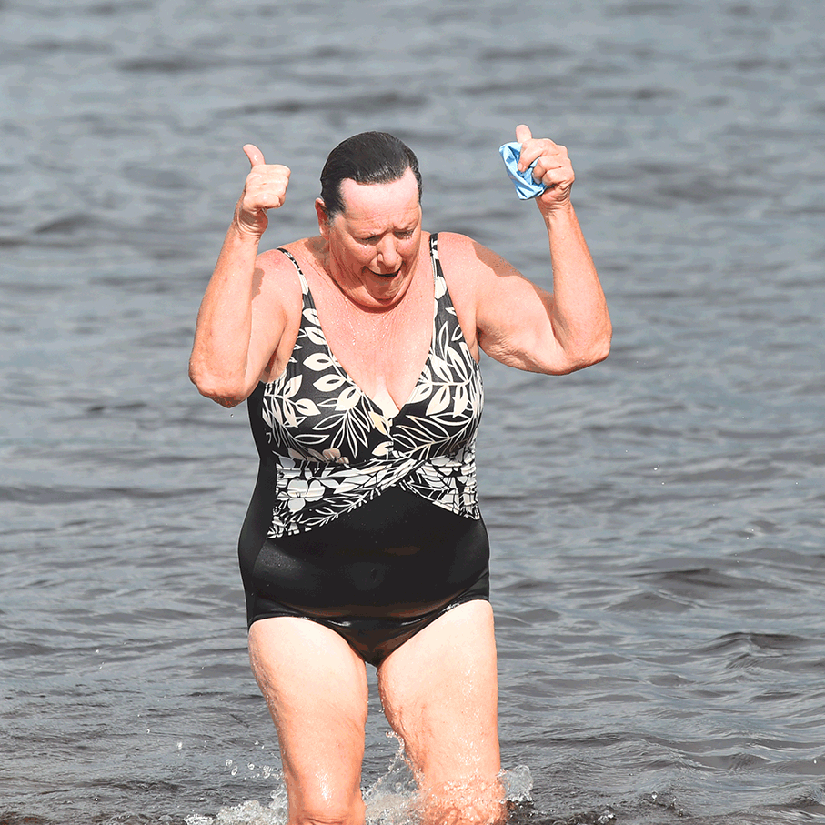
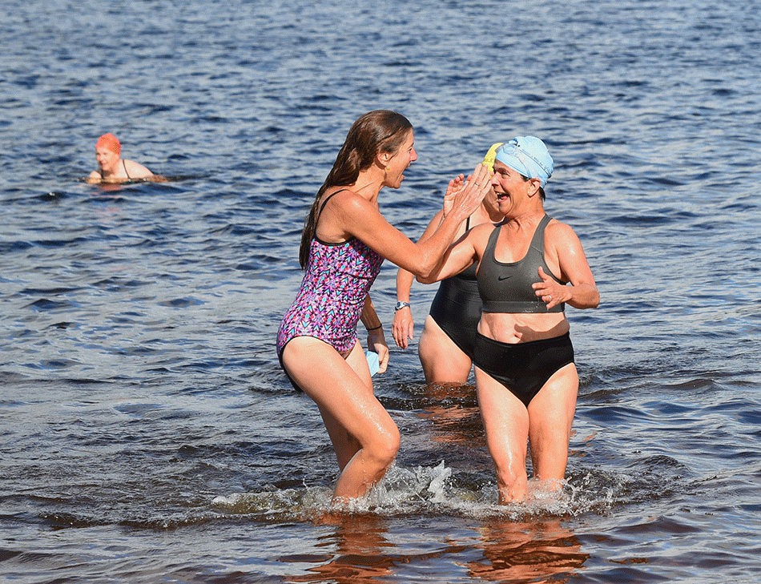
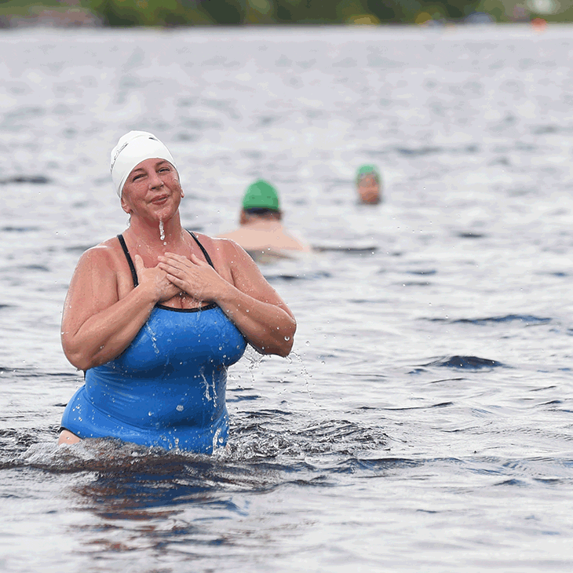
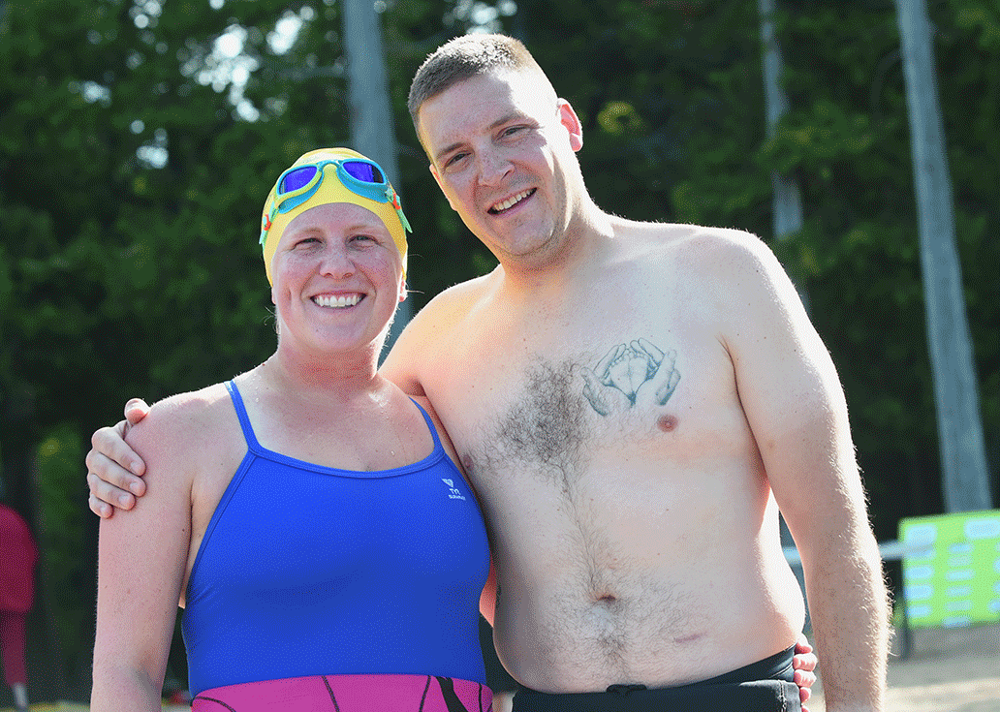
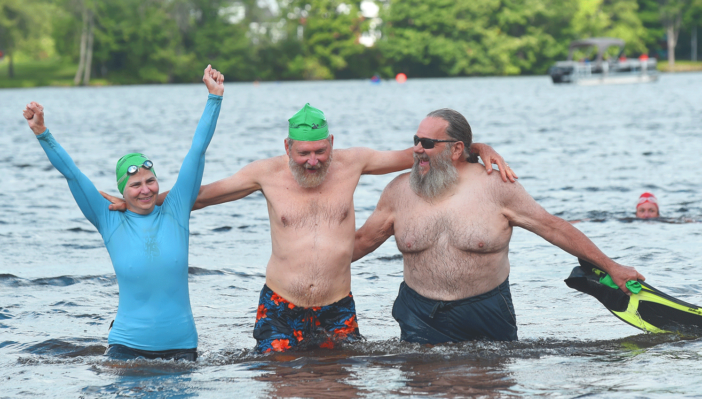

<style>
#photos {
   /* Prevent vertical gaps */
   line-height: 0;
   
   -webkit-column-count: 5;
   -webkit-column-gap:   0px;
   -moz-column-count:    5;
   -moz-column-gap:      0px;
   column-count:         5;
   column-gap:           0px;
}

#photos img {
  /* Just in case there are inline attributes */
  width: 100% !important;
  height: auto !important;
}

@media (max-width: 1200px) {
  #photos {
  -moz-column-count:    6;
  -webkit-column-count: 6;
  column-count:         6;
  }
}
@media (max-width: 1000px) {
  #photos {
  -moz-column-count:    4;
  -webkit-column-count: 4;
  column-count:         4;
  }
}
@media (max-width: 800px) {
  #photos {
  -moz-column-count:    3;
  -webkit-column-count: 3;
  column-count:         3;
  }
}
@media (max-width: 400px) {
  #photos {
  -moz-column-count:    1;
  -webkit-column-count: 1;
  column-count:         1;
  }
}
</style>

<html>
	<section id="photos"> 
    	
        
        
        
        
        
        
        
        
        
    	
        
        
        
        
        
        
        
        
        
        
        
        
    </section>
</html>